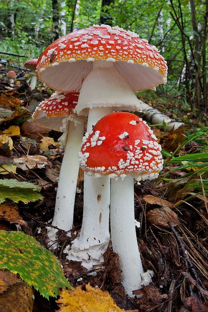

In September 2015, I travelled to a remote forest in Japan's Nara Prefecture, where I hoped to find one of the world's rarest mushrooms. I had no guide and no special talent for mushroom hunting, but I was emboldened by the knowledge that one man had twice encountered the rare fungi, Chorioactis geaster, while surveying the humid forests near Kawakami Village, which is home to just over two thousand people. Masakuni Kimura, who curates a local natural history museum, first happened upon Chorioactis geaster near the end of summer in 2006, when he found a dozen specimens sprouting from a dead oak tree next to a mountain stream. They looked like dark brown cigars protruding from the fallen timber. Then, in September 2007, he discovered four more of the mushrooms near the same site, roughly 470 meters above sea level.
Only one other person had ever seen this mushroom on Japanese soil, and he had died years earlier, making Kimura the only currently living witness to its existence. In 1937, a young mycologist named Rokuya Imazeki discovered Chorioactis geaster on Japan's southern island of Kyushu. By the time Imazeki spotted the mushroom again, in 1975, Japan had fought and lost a war, adopted a new constitution, and experienced a miraculous economic recovery.
These days, Kimura's true passion is moss. No amount of pleading could convince him to lead me in search of Chorioactis geaster, which has been found only in southern Japan, where it is called kirinomitake, as well as in a few counties in central and south Texas — its spores having somehow floated across the Pacific Ocean and half the United States — where it is known as the Devil's Cigar. So I set out alone, hewing closely to the minutes of a recent meeting of Japan's Mycological Society where Kimura had given his account, searching along streams running at the same elevation at which Kimura had seen the mushroom, scanning the spongy terrain for fallen oak trees.
When it comes to poisoning, there is one mushroom that kills more than any other. Amanita phalloides, more widely known as the death cap, is said to taste delicious. Its symptoms often don't surface until a day after it is eaten, initially seeming like a mild stomach illness, even as the death cap quietly destroys the diner's liver. Some years, the mushroom might kill a few elderly foragers in France, and a few more in the U.S. and Italy. But in reality, the vast majority of people killed because of mushrooms die before they ever get a chance to empty their basket and eat one.
In 2010, only one American died from eating poisonous mushrooms, according to a report issued by the American Association of Poison Control Centers. That same year, in a span of just 10 days, 18 people died while hunting mushrooms in Italy: In the Lombardy region, they fell into crevasses where their broken bodies succumbed to blood loss and dehydration; in Piedmont, near the border with France, ill-equipped amateurs went into the forests and mountains and succumbed to exposure after becoming lost; and in Trentino-Alto Adige, near Austria, they lost their footing while navigating sheer rock faces under cover of darkness, aiming to thwart their rivals but instead thwarting any would-be rescuers. One victim was a 65-year-old woman who fell 40 meters down a steep, rocky slope in a forest near Sondrio, a small town near the Swiss border.
These were mostly amateurs, foraging for a special ingredient to add to their fall cooking, drawn to an unknown danger by the early and bountiful harvest that blessed the Alpine valleys of northern Italy that year. And like the U.S., Italy has its share of murder indictments that lead back to some quarrel over mushrooms. On October 1, 2016, police found the headless corpse of Albano Crocco near an isolated ravine in the woods outside Genoa. The evidence soon led them to the pensioner's 55-year-old nephew, Claudio Borgarelli, who lived nearby. The Italian media reported that police bugging devices placed in Borgarelli's cottage after the body's discovery indicated the alleged killer had shot and beheaded his uncle because he believed he was trespassing on his property while foraging for mushrooms.
last September, over the course of several hikes around Eugene, Oregon, I encountered a number of mushroom pickers who all told me that the pursuit divided people into one of two groups: those searching for mushrooms, and those searching for money. This view of mushroom hunting is largely that of rogue foodies and amateur mycologists; those who must scrape from the soil some kind of living seem to have less time to dwell on the philosophical underpinnings of their endeavors.
In Japan, after finding no sign of the puff of white that emerges from the Devil’s Cigar as it gives up its spores, nor hearing the distinctive hissing sound this produces, I had only my own musings to consider. Near dusk, I climbed high up on a bluff and looked out toward the ocean kirinomitake had once crossed. We still don’t know how kirinomitake spores made this journey from Japan to Texas, but we can be sure we played no part in it; genetic testing shows the Japanese fungus began adapting itself to life on the Texas plains millions of years before humans walked the earth.
Last year, a new adaptation was recorded in an academic study: Some fungi in Alaska were shown to respond to rising temperatures with an increased metabolism and faster reproduction, accelerating their intake of oxygen from and output of carbon into the atmosphere. On a mass scale, such an adaptation could hasten the warming of the planet that humans have already set in motion. And despite the catastrophic effect this would have on many kinds of fungi, they seem in the end, on the whole, more likely than we to remain.